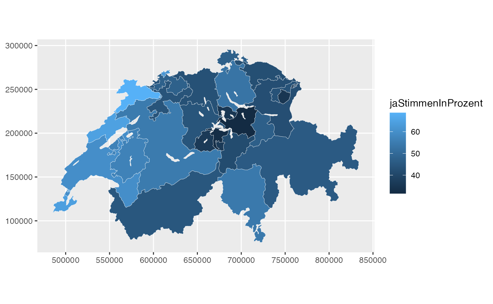
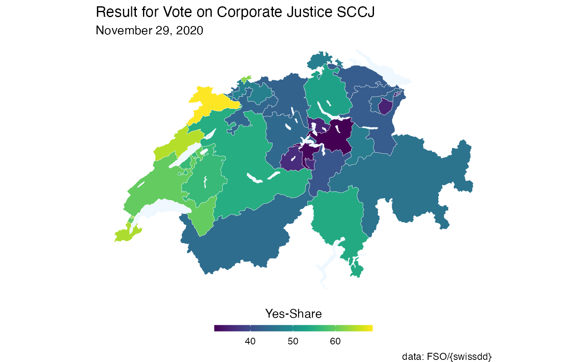
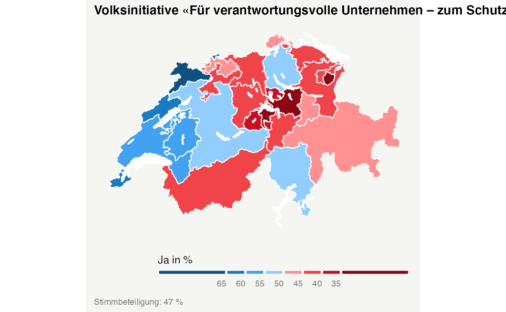

This functionality has been kindly added by David Zumbach.
The function get_geodata allows users to download geographic information for different administrative units in Switzerland. The function returns a simple feature data.frame. Users should specify the level of administrative units using the argument geolevel. The following options are available:
-
national to download administrative boundaries of Switzerland
-
cantonal to download administrative boundaries of cantons
-
municipality to download administrative boundaries of municipalities/communities
-
zh_counting_districts to download administrative boundaries of Zählkreise for the City of Zurich
-
lakes to download boundaries of major lakes
An illustration of how one could utilize the functionionality of swissdd to visualize vote outcomes for any national vote is given here.
Plot voteshares “by hand”
Producing a map “by hand” allows for more flexibility. For example, you could simply download the geo-information and plot something entirely else. If you never ever want to produce a plot by hand, skip to the next sectionn.
# installation from CRAN (stable)
# install.packages("swissdd")
# install.packages("dplyr")
# installation from github (ongoing updates)
# devtools::install_github("politanch/swissdd")
library(swissdd)
packageVersion("swissdd")
#> [1] '1.1.3'
library(dplyr)
library(ggplot2)
library(sf)
library(viridis)
#download geo information
geo_canton <- get_geodata(geolevel = "canton")
geo_canton$canton_id <- as.numeric(geo_canton$canton_id)
# download data from API on the vote calles «Swiss coalition for Corporate justice SCCJ»
kovi_nat <- get_nationalvotes(votedates="2020-11-29", geolevel = "canton")%>%
dplyr::filter(id == 6360)%>%
dplyr::select(canton_id, jaStimmenInProzent)%>%
mutate(canton_id=as.numeric(canton_id))
Combine the two data.frames.
can_df <- left_join(geo_canton, kovi_nat, by="canton_id")
Plot the whole thing accordingly.

With this you can start prettifiyng the map according to your liking. Wee add the lakes as well here:
lakes <- swissdd::get_geodata(geolevel = "lakes")
ggplot(can_df)+
geom_sf(aes(fill=jaStimmenInProzent), color="white", size=.1)+
geom_sf(data=lakes, fill="aliceblue", color=NA)+
scale_fill_viridis(option="D",
name = "Yes-Share",
guide=guide_colorbar(title.position="top",
direction = "horizontal",
barheight = unit(2, units = "mm"),
barwidth = unit(50, units = "mm"),
title.hjust =0.5))+
theme_void()+
theme(legend.position="bottom")+
labs(title="Result for Vote on Corporate Justice SCCJ", subtitle="November 29, 2020",
caption="data: FSO/{swissdd}")

Plot voteshares with built-in function
If for some reason you don’t want to create your map from scratch you could also rely on the function plot_nationalvotes() which allows you to quickly plot turnout rates or yes-shares. In order to run this function you have to specify the administrative level as well as the official identification number of the vote you’re interested in.
